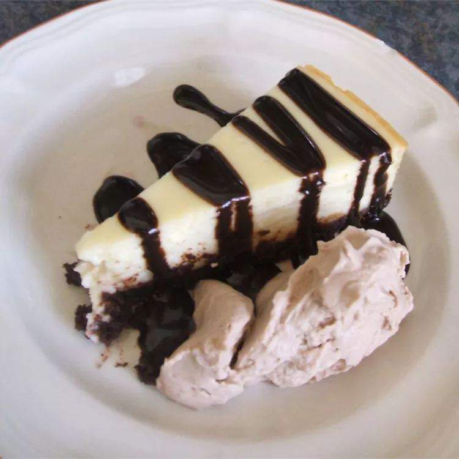

White Chocolate Cheesecake

Description
This is a dense cheesecake that is very smooth and melts in your mouth. The white chocolate brandy sauce tops it off. I just nap it over the center of the slice of cheesecake on the plate.
I garnish it with mint leaves and either raspberries or strawberries.
Ingredients:
- White chocolate: 4 (1 ounce) squares white chocolate
- Cream cheese: 3 (8 ounce) packages cream cheese, room temperature
- White sugar: ¾ cup white sugar
- All-purpose flour: ¼ cup all-purpose flour
- Eggs: 3 eggs, room temperature
- Heavy cream: ½ cup heavy cream, room temperature
- Vanilla: ½ teaspoon vanilla extract